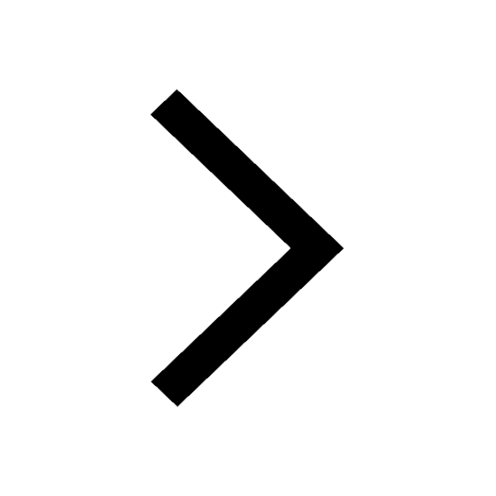

A Functional Grammar of Nunggubuyu
Table of Contents
- 1.1 The Nunggubuyu people 
- 1.2 Main features of the language
- 1.3 The data base and its usage here
- 1.4 Use of this grammar
- 1.5 Acknowledgements
- 2.1 Vowel segments
- 2.2 Vowel archiphoneme /V/ and other problematic cases
- 2.3 Consonantal segments
- 2.4 Consonant archiphonemes /G/ and /N/
- 2.5 Paired stops and continuants; the problem of /w1/ and /w2/
- 2.6 Distributional restrictions: vowels
- 2.7 Distributional restrictions: initial and final C, CC
- 2.8 Distributional restrictions: medial CC clusters
- 2.9 CCC clusters
- 2.10 Phonologically significant phoneme classes
- 2.11 Intonation and pitch contour
- 2.12 /o:/
- 3.1 General
- 3.2 ngu-Epenthesis P-1
- 3.3 Initial Reduplication P-2
- 3.4 Final Reduplication P-3
- 3.5 Homorganic Semivowel-Deletion P-4
- 3.6 Initial Semivowel-Insertion P-5
- 3.7 w1-Insertion P-6
- 3.8 w-Insertion P-7
- 3.9 Velar-Insertion P-8
- 3.10 w1-Deletion P-9
- 3.11 y-Insertion P-10
- 3.12 Prefixal w2-Deletion P-11
- 3.13 Stem w2-Deletion P-12
- 3.14 w1-Palatalisation P-13
- 3.15 yr-Contraction P-14
- 3.16 iy-Contraction P-15
- 3.17 Lenition P-16
- 3.18 digu-Lenition P-17
- 3.19 Hardening P-18
- 3.20 Leftward-Hardening P-19
- 3.21 Pronominal d-Insertion P-20
- 3.22 Derivational d-Insertion P-21
- 3.23 Nasalisation P-22
- 3.24 Denasalisation P-23
- 3.25 rn-Contraction P-24
- 3.26 r-Deletion P-25
- 3.27 Palatal-Deletion P-26
- 3.28 Nasal-Assimilation P-27
- 3.29 Semivowel-Deletion P-28
- 3.30 Stop-Deletion P-29
- 3.31 Nasal-Deletion P-30
- 3.32 Geminate-Contraction P-31
- 3.33 lh-Delateralisation P-32
- 3.34 Initial Nasal-Deletion P-33
- 3.35 Feminine Prefix-Truncation P-34
- 3.36 Prefix-Truncation P-35
- 3.37 rV-Truncation P-36
- 3.38 V-Assimilation P-37
- 3.39 V-Ablaut P-38
- 3.40 Interjection-Formation P-39
- 3.41 Rdp-Shortening P-40
- 3.42 Nonsg-Shortening P-41
- 3.43 Adverb-Shortening P-42
- 3.44 Length-Shift P-43
- 3.45 Monosyllable-Lengthening P-44
- 3.46 Verb-Lengthening P-45
- 3.47 V-Truncation P-46
- 3.48 yi-Elision P-47
- 3.49 w2an-Contraction P-48
- 3.50 VV-Contraction P-49
- 3.51 V-Fronting P-50
- 3.52 Order of application
- 3.53 Diagrams of rule ordering
- 3.54 Final remarks on phonology
- 4.1 General
- 4.2 Common and adjectival nouns
- 4.3 Adverbial nouns
- 4.4 Personal names, including necronyms
- 4.5 Place names (toponyms)
- 4.6 Inflection and derivation
- 4.7 NC (noun-class) prefixes: forms
- 4.8 Uses of NCinfl prefixes
- 4.9 Uses of NCder prefixes; defective (bound) roots
- 4.10 Semantics of NC categories: human
- 4.11 Semantics of nonhuman NC categories: NA, NgARA
- 4.12 Semantics of nonhuman NC categories: WARA
- 4.13 Semantics of nonhuman NC categories: ANAø, ANAwu, and MANA
- 4.14 Types of reduplication
- 4.15 Regular number-marking
- 4.16 Minor plural markers: /man-/, /mulung-/, /-w1ang/, /-yung/, and /-yinyung/
- 4.17 Multiple /-w1ara(G)-/, Pl intensifier /-lhangu/
- 4.18 Case system: general
- 4.19 Nominative /-ø/
- 4.20 Allative-Dative /-w1uy/; direct vs. indirect object
- 4.21 Ablative /-w1ala/
- 4.22 Special nuclear uses of /-w1uy/ and /-w1ala/
- 4.23 Pergressive /-w2aj/ and Retrospective Pergressive /-w1aj/
- 4.24 Purposive /-yungguyung/
- 4.25 Locative /-ruj/
- 4.26 Ablative-Pergressive /-w1ala-waj/
- 4.27 Instrumental /-miri/
- 4.28 Originative /-mira:dhu/
- 4.29 Similative /-yi:/
- 4.30 Relative /-yinyung/
- 4.31 Vocatives
- 4.32 Postpositions: /-w2ugij/, /-maji:/, /-w2indi:yung/, /-maga:/, /-magi/
- 4.33 Nouns used as abstractives: /wunga:ri/, /wumangumangu/, /wungali/, /bari/, /lharug/, /wungubal/, /wuyungguwan/, /galij/
- 4.34 Nominal affixes used with other word classes
- 5.1 General
- 5.2 Stem morphology
- 5.3 Dual /-w2a:/ and /-w2i:yung/
- 5.4 Further analysis of stem forms
- 5.5 NPs with separate expression of propositus
- 5.6 Dyadic kin terms
- 5.7 Bereavement terms and avoidance style
- 5.8 Markedness relations; choice of propositus
- 5.9 Suffix sequence /-lhara-yung/
- 5.1 Kinship subcategories; body-part metonyms
- 5.11 Nonhuman kin terms and compounds
- 5.12 Kinship verbs
- 6.1 General
- 6.2 Stem forms
- 6.3 Uses of Nominative pronouns
- 6.4 Uses of Relative case forms of pronouns
- 6.5 Unsuffixed Oblique stem (predicate genitive)
- 6.6 Other nonzero case forms
- 6.7 Vocatives
- 6.8 Contrastive /-ayung/, /-ayung-gaj/
- 6.9 Emphatic /-waj/, /-waj-baj/
- 6.10 Sequential /-abilhangu/
- 6.11 Lateral derivatives
- 6.12 Suffix /-miri/
- 6.13 Postpositions: /-w2ugij/, /-maji:/, etc.
- 6.14 Interaction of pronominal and demonstrative categories
- 7.1 General
- 7.2 Forms of predicative (unprefixed) DemPro
- 7.3 Forms of nonpredicative (prefixed) DemPro
- 7.4 Uses of predicative and nonpredicative DemPro
- 7.5 Centripetal /-ala/, Centrifugal /-ali/, Transverse /-waj/
- 7.6 Concrete /-u/
- 7.7 Absolute /-yung/ and Absolute Dual /-yum-ba:/
- 7.8 Centripetal plus Ablative: /an-uba-ni:-'la-wala/
- 7.9 /-ala-yung/, /-ala-yung-gala/, /-ala-yung-gala-waj/
- 7.10 /-yung-gaj/
- 7.11 Demonstrative adverbs (DemAdv) in general
- 7.12 Locative DemAdv in /-ji/, /-gu/
- 7.13 Allative DemAdv in /-guni/
- 7.14 Directional DemAdv in /-u-wuy/
- 7.15 Centripetal DemAdv in /-ala/, /-ala-yung/
- 7.16 Centrifugal DemAdv in /-ali/
- 7.17 Pergressive DemAdv in /-waj/, /-waj-gaj/, /-w1ala-waj/
- 7.18 Case suffixes with DemAdv and DemPro: Locative /-ruj/
- 7.19 Case suffixes with DemAdv and DemPro: Instrumental /-miri/
- 7.20 Case suffixes with DemAdv and DemPro: /-mira:dhu/, /-w1ala/, /-w1uy/, /-yungguyung/, /-yi:/, /-yinyung/
- 7.21 Lateral DemAdv and DemPro: /ya:-ji-ji:-'la/, /ya:-ji-ji:-'li/, /wa-ga-ga:-'la/, /wa-ni:-'la/, etc.
- 7.22 'Facing here/away/' derivatives /-bu-gunu:-'/, /buguwugunu:/, /ba-ga:-'la/, /bagawaga:la/, /bagawaga:lu:/
- 7.23 Compounds with /mulung-/ 'group' and Gentilic /nuN-/
- 8.1 Tense-Aspect-Mood-Negativity categories
- 8.2 Formal expression of the categories
- 8.3 Aspect
- 8.4 Verb reduplication
- 8.5 Imperative
- 8.6 Past Potential
- 8.7 Evitative
- 9.1 General
- 9.2 Additional phonological modifications
- 9.3 Formal internal analysis of pronominal prefixes
- 9.4 Direct, inverse, and equipollent transitive prefixes
- 9.5 Categorial neutralisations in transitive prefixes
- 9.6 Portmanteaus
- 9.7 The pronominal hierarchy and morpheme ordering rules
- 9.8 B-Insertion and Inverse-Insertion
- 9.9 Deletions of component morphemes within pronominal prefixes
- 9.10 A morpheme conversion rule (-P1-becomes -Nonsg-)
- 9.11 Allomorph-Assignment for component morphemes
- 9.12 Nominative-accusative or ergative-absolutive patterning?
- 10.1 General
- 10.2 Benefactive /-aG-/ or /-wa:G-/
- 10.3 Comitative /-anyji-/
- 10.4 Multiple prefixes: /-ngaran-/ or /-ngaraG-/, /-w1ara-/ or /-w1araG-/, /-lhagara-/, /-w1aragara-/, /-w2algara-/
- 10.5 Reflexive suffix //-i-//
- 10.6 Reciprocal suffix /-nyji-/
- 10.7 Causative suffix /-jga-/, /-jgi-/
- 10.8 Inchoative verbalising suffixes /-ma-/, /-w1i-'-/, /-w2i-/, /-dhi-/
- 10.9 Factitive /-w1a-/, /-ga-/
- 10.10 Minor derivational affixes: 'together' prefixes /-anggara-/, /-albunguN-/, /-ilbuN-/, /-ambirwir-/, /-w1aji-/; suffixes /-ja-/, /-dha-/, /-mi-/
- 10.11 Combinations of two or more derivational affixes
- 11.1 General
- 11.2 Verb classes
- 11.3 Identification of suffix allomorphs
- 11.4 Identification of stem-final vowel
- 11.5 YA class augments
- 11.6 Suppletive verbs: 'to come', 'to go'
- 11.7 Aspectual subsystems in the inflectional affixation
- 11.8 Assignment of verbs to inflectional classes
- 11.9 Textual attestations (selected)
- 12.1 Definitions: particle, postposition, enclitic particle
- 12.2 Verbal root forms
- 12.3 /adaba/ or /aba/ 'now, then' (immediate)
- 12.4 /mari/ or /nga/ 'and'
- 12.5 /wurugu/ 'later'
- 12.6 /ngijang/ 'more, again, further'
- 12.7 Anticipatory /yingga/, /araga/ 'suddenly', /giya:/ 'look out:'
- 12.8 Confirmative particles: /yigaj/, /ngubindi/
- 12.9 Exhortative particles: /jiri/, /wili/, /nga:bang/, /ma/
- 12.10 Concessive /wulguy/, Adversative /yagu/
- 12.11 Dubitatives /ari/, /muga/, /nga:lhug/
- 12.12 /yaga:/
- 12.13 Similative /ngunyju/ 'like, as'
- 12.14 /arbidi/ 'anyway' (noun)
- 12.15 Enclitic /yamba/ 'because'
- 12.16 Emotive exclamations: /aduga/, /anyjawalayung/
- 12.17 Terminal particle /wi:ya:/ 'that's all:'
- 12.18 Affirmative particles: /yao:/, /i:./
- 12.19 Self-correcting /gada:/
- 12.20 Exclamations: /gao:/, /way:/, /gay:/, /yay:/, /gaga:/, /yagay:/
- 12.21 Postpositions: /-w2ugij/, /-maji:/, /-maga:/, /-magi/, /-w2indi:yung/, /-lhangu/
- 13.1 Yes/no particles: /yu:ga/, /aliyung/, /ala/
- 13.2 WH interrogatives: general remarks
- 13.3 /yangi/ 'what?'
- 13.4 /yangi-mayi/, nuny-jangi-mayi/ '(of) what place?'
- 13.5 /yangi-nyung/, /yangi-nyum-ba:/, /yanga-yangi/ 'who?'
- 13.6 /-ngargu/ 'how much?, how many?'
- 13.7 /lhal-ngargu/ 'when?'
- 13.8 Interrogative-demonstratives
- 13.9 Interrogative verb /=yaminggari-/
- 13.10 /(w)a:ng/ 'whatchamacallit?'
- 14.1 Classification of cpds.
- 14.2 Special cpd. initials
- 14.3 Special cpd. finals
- 14.4 Auxiliary compound finals: /-w2u-/ and others
- 14.5 Nc-NAdj and (rare) Nc-Nc cpds.
- 14.6 Grammatical relation of nominal cpd. initial
- 14.7 Derivational layering (double cpds., etc.)
- 14.8 Discourse uses of productive cpds.
- 14.9 Transitivity changes accompanying compounding
- 14.10 Unmarked (dummy) cpd. initials: /-w1ara-/, /-lhalma-/, /-ngagara-/, /-rangga-/, /-wurugu-/, /-malangaG-/, /-aG-/
- 14.11 Gentilic /nuN-/
- 14.12 Special nuclear initials: /bala-/ 'side', /malG-/ 'time(s)', /agalhal-/ 'season', /lhal-/ 'country, place'
- 14.13 /w1andha-/ 'craving' , /anyji-/ 'being with' as cpd. initials
- 14.14 Proprietive derivation: reduplication and suffix /-yij/
- 14.15 Nc or NAdj nominaliser /-j/ (with or without reduplication)
- 14.16 Abstractive nominalisations: /-j/, /-ny/
- 14.17 Special reduplications of /anybaj/ 'other, different'
- 14.18 Cpd. initial /-malangaG-/ 'considerably, very'
- 14.19 Actor-indexing cpd. initials for myth characters
- 14.20 Special Pl/Collective initials with verbs and NAdj: /-man-/, /-mandag-/, /-mulung-/
- 14.21 Root nouns (participial, agentive); Negative final /-ari/
- 14.22 /-w2alij/ 'pair of'
- 14.23 Diminutives (compounded or by consonantal "symbolism")
- 14.24 Irregular and problematic sets
- 14.25 Numerals; /anyja:-'nyja:-'nyja:bugij/ 'one by one'
- 15.1 General
- 15.2 Status of "NP"
- 15.3 Status of "VP"
- 15.4 Basic word order patterns within breath/intonation groups
- 15.5 Status of "clause"; double-predicate construction
- 15.6 Negation, "negative context," and aspectual skewing
- 15.7 Conjunction (of nouns, etc.)
- 15.8 Possession
- 15.9 Grammatical relations; "dummy" subjects
- 16.1 Simple clause conjunction and chaining
- 16.2 Status of "complement" and "subordinated" clauses
- 16.3 Direct and indirect quotation
- 16.4 Relative clause with /-yinyung/ ; case-spreading from head noun
- 16.5 Purposive clause with /-yungguyung/
- 16.6 Other case suffix subordinators: /-ruj/, /-w1ala/, /-waj/, /-w1uy/, /-mira:dhu/, /-miri/, /-yi:/
- 16.7 Conditionals
- 16.8 'to want' construction
- 16.9 Rough equivalents of English matrix verb with complements
- 16.10 Comparatives
- 17.1 General
- 17.2 Remarks on "Text A"
- 17.3 Information units in Text A (Echoes, Rephrasings, etc.)
- 17.4 Discourse uses of intonation
- 17.5 Referential tracking and disambiguation
- 17.6 Focus, topic, definiteness, givenness
- 17.7 Preposed and "afterthought" constituents
- 17.8 Compounding in Text A
- 17.9 Particles in Text A
- A. Adaptation of English and Creole borrowings
- B. Historical linguistic notes
- C. Addenda/Corrigenda to earlier publications
>